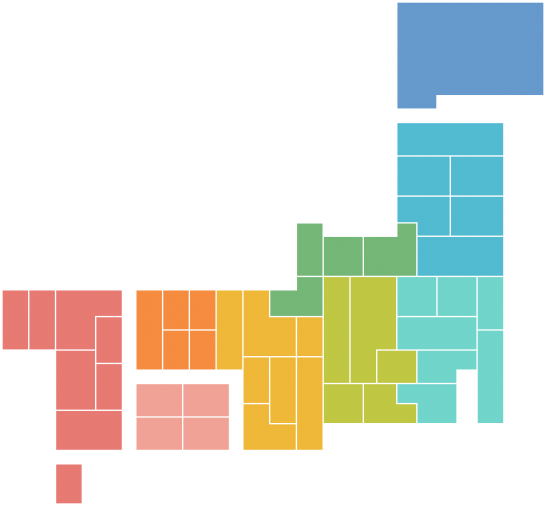

北海道・東北
関東
中部
近畿
中国・四国
九州・沖縄
北海道
青森県
秋田県
岩手県
山形県
宮城県
福島県
茨城県
群馬県
栃木県
埼玉県
千葉県
東京都
神奈川県
山梨県
長野県
新潟県
富山県
石川県
福井県
静岡県
岐阜県
愛知県
三重県
大阪府
兵庫県
京都府
滋賀県
奈良県
和歌山県
島根県
広島県
鳥取県
岡山県
香川県
愛媛県
徳島県
高知県
山口県
福岡県
佐賀県
長崎県
熊本県
大分県
宮崎県
鹿児島県
沖縄本島